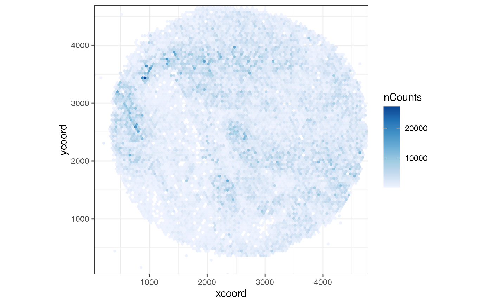
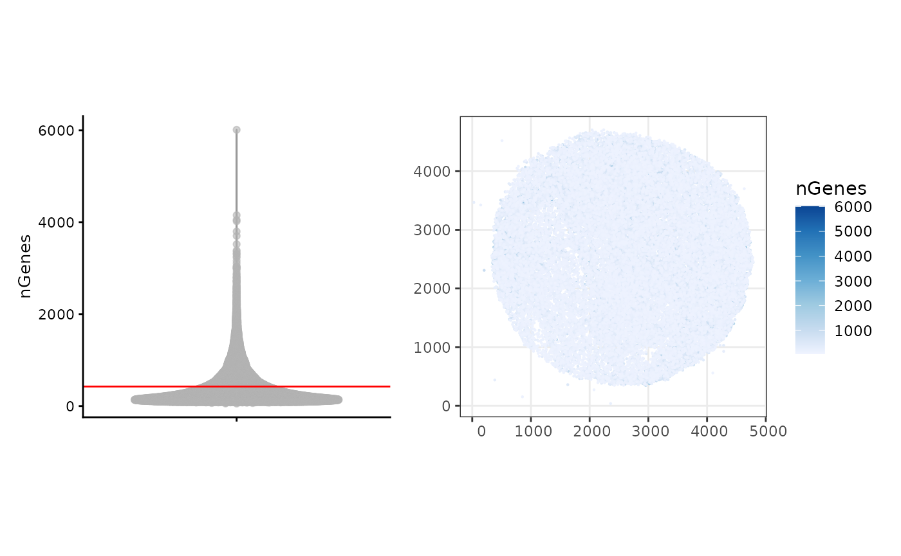
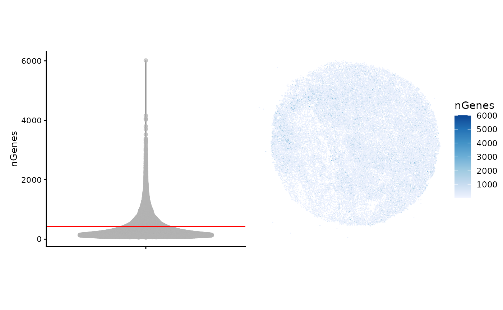
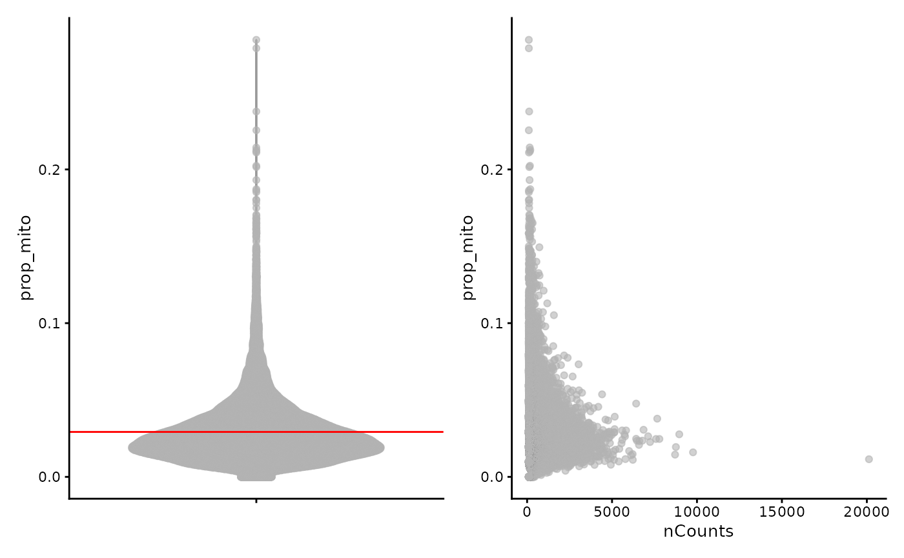
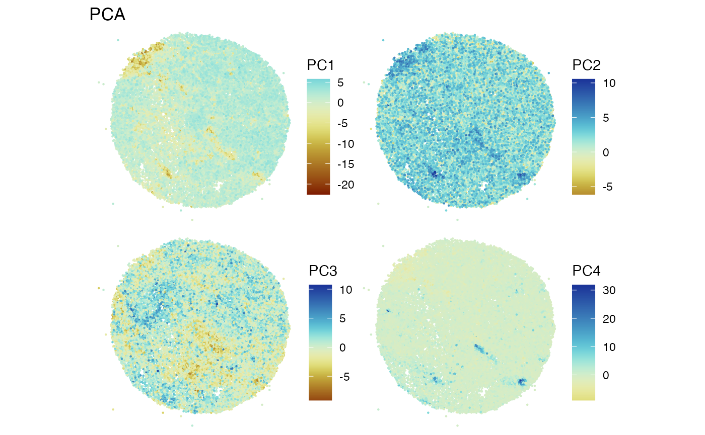
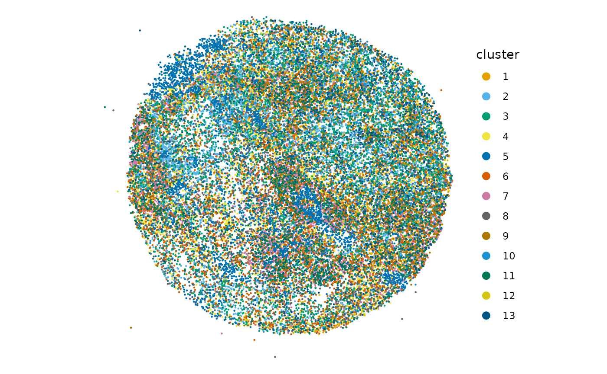
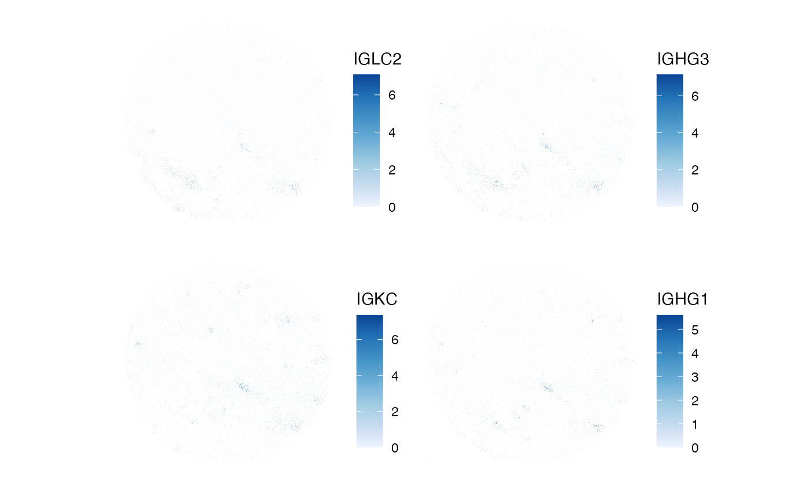

Slide-Seq V2 Exploratory Data Analysis
Kayla Jackson
2024-11-23
Source:vignettes/vig3_slideseq_v2.Rmd
vig3_slideseq_v2.RmdIntroduction
Slide-seq V2 is a spatial transcriptomic tool that measures genome-wide expression using DNA-barcoded beads patterned on a slide in an non-regular array. The beads used in the current protocol have a diameter of and are thus larger than a single cell, but the number of detected transcripts is an order of magnitude higher compared to the previous iteration of the technology.
In this vignette, we use Voyager to analyze a dataset
generated using the Slide-Seq V2 technology. The data is described in Dissecting the
treatment-naive ecosystem of human melanoma brain metastasis (Biermann et al. 2022). The raw counts and cell
metadata are publicly available from GEO. We will focus on one of the
human melanoma brain metastasis (MBM) samples that are provided in the
SFEData package as a
SpatialFeatureExperiment(SFE) object. The SFE object
contains raw counts, QC metrics such as number of UMIs and genes
detected per barcode, and centroid coordinates for each barcode as a
sf POINT geometry.
library(Voyager)
library(SFEData)
library(SingleCellExperiment)
library(SpatialExperiment)
library(scater)
library(scran)
library(bluster)
library(ggplot2)
library(patchwork)
library(spdep)
library(BiocParallel)
theme_set(theme_bw())
(sfe <- BiermannMelaMetasData(dataset = "MBM05_rep1"))
#> see ?SFEData and browseVignettes('SFEData') for documentation
#> loading from cache
#> class: SpatialFeatureExperiment
#> dim: 27566 29536
#> metadata(0):
#> assays(1): counts
#> rownames(27566): A1BG A1BG-AS1 ... ZZZ3 snoZ196
#> rowData names(3): means vars cv2
#> colnames(29536): ACCACTCATTTCTC-1 GTTCANTCCACGTA-1 ... ACGCGCAATCGTAG-1
#> TTGTTCCGTTCATA-1
#> colData names(4): sample_id nCounts nGenes prop_mito
#> reducedDimNames(0):
#> mainExpName: NULL
#> altExpNames(0):
#> spatialCoords names(2) : xcoord ycoord
#> imgData names(1): sample_id
#>
#> unit: full_res_image_pixels
#> Geometries:
#> colGeometries: centroids (POINT)
#>
#> Graphs:
#> sample01:The SFE object in the SFEData package includes
information for 27,566 features and 29,536 beads/barcodes.
Quality control (QC)
We begin by performing some exploratory data analysis on the barcodes in the tissue. There are some pre-computed QC measures that are stored in the object.
Total UMI counts (nCounts), number of genes detected per
spot (nGenes), and the proportion of mitochondrially
encoded counts (prop_mito). Below, we plot the total number
of UMI counts per barcode as a violin plot and in space. For the latter
task, we leverage the function plotSpatialFeature() which
uses geom_sf() to plot geometries where applicable. The
first few lines compute the average number of UMI counts per barcode and
this average is plotted as a red line in the violin plot.
avg <- as.data.frame(colData(sfe)) |>
dplyr::summarise(across(-sample_id, mean))
violin <- plotColData(sfe, "nCounts") +
geom_hline(aes(yintercept = nCounts), avg, color="red") +
theme(legend.position = "top")
spatial <- plotSpatialFeature(sfe, features = "nCounts",
colGeometryName = "centroids", size = 0.2) +
theme_void()
violin + spatial
Each barcode is represented as an sf POINT geometry In
the plot above, we note that many beads have quite low UMI counts, but
there are small regions throughout the tissue that appear to have high
counts. This is perhaps due to high cellular density of the melanoma
cells, but we can only speculate without an image of the tissue.
Interestingly, there are not any barcodes with zero counts. This is in
contrast to many scRNA-seq dataset were many cells have zero counts.
Given the density of points, we may choose to aggregate points into a hexagonal grid to avoid overplotting. Each hexagon will be colored by the total number of UMI counts in that space and each hexagon may represent more than one barcode.
as.data.frame(cbind(spatialCoords(sfe), colData(sfe))) |>
ggplot(aes(xcoord, ycoord, z=nCounts)) +
stat_summary_hex(fun = function(x) sum(x), bins=100) +
scale_fill_distiller(palette = "Blues", direction = 1) +
labs(fill='nCounts') +
theme_bw() + coord_equal() +
scale_x_continuous(expand = expansion()) +
scale_y_continuous(expand = expansion()) +
theme_void()
It is worthwhile to note that cell segmentation data were not
included with this dataset. Even though Slide-Seq V2 does not profile
gene expression at single cell resolution, cell segmentation data can be
flexibly stored as annotGeometries in the SFE
object. These geometries can be plotted with barcode-level data and can
be used with sf for operations like finding the number of
barcodes localized to a single cell.
colData(sfe)$log_nCounts <- log(colData(sfe)$nCounts)
avg <- as.data.frame(colData(sfe)) |>
dplyr::summarise(across(-sample_id, mean))
violin <- plotColData(sfe, "log_nCounts") +
geom_hline(aes(yintercept = log_nCounts), avg, color="red") +
theme(legend.position = "top")
spatial <- plotSpatialFeature(sfe, features = "log_nCounts",
colGeometryName = "centroids",
size = 0.2)
violin + spatial
The plot above visualizes the number of UMI counts per barcode on a log scale. It appears that barcodes with higher counts are co-localized in regions throughout the tissue, however, these regions are rather small and may not suggest spatial autocorrelation.
Next we find number of genes detected per barcode. Again, this QC
feature is provided as nGenes in the colData
attribute for barcodes.
violin <- plotColData(sfe, "nGenes") +
geom_hline(aes(yintercept = nGenes), avg, color="red") +
theme(legend.position = "top")
spatial <- plotSpatialFeature(sfe, features = "nGenes",
colGeometryName = "centroids",
size = 0.2)
violin + spatial
Similar to the number of UMI counts per barcode, there seem to be small regions with higher number of genes throughout the tissue. These may correspond to regions of cellular diversity or high cellular density, as might be expected in the context of melanoma.
We can compute the degree to which the number of UMI counts per barcode depends on the spatial location of each measurement. This relationship, spatial autocorrelation, can be quantified using Moran’s index of spatial autocorrelation, or Moran’s I. The computation of Moran’s I requires first a definition of what constitutes objects being “near” to each other. Most simply, this is represented as a spatial weights matrix. One possible representation is an adjacency matrix. This matrix can be computed for polygonal data and the resulting matrix can be binary, where entries are 1 if polygons share a border, and 0 elsewhere (including the diagonal). These entries can be weighted in different ways, including by the length of border shared between two polygons.
This schema does not necessarily lend itself well to spatial transcriptomic technologies, where the polygonal boundaries of cell objects may not correspond to the measurements in the count matrix, or individual spots or barcodes may themselves correspond to multiple neighborhoods of cells. Certainly, the interpretation of spatial weights matrix will change depending on the technology.
In any case, we can generate a putative spatial graph using the
k-nearest neighbors algorithm. This is implemented in the
findSpatialNeighbors() function with the argument
method = "knearneigh" . We will store the result in the
colGraphs() slot of the SFE object.
colGraph(sfe, "knn5") <- findSpatialNeighbors(sfe, method = "knearneigh",
dist_type = "idw", k = 5,
style = "W")Now compute Moran's I for some barcode QC metrics using
colDataMoransI().
features_use <- c("nCounts", "nGenes")
sfe <- colDataMoransI(sfe, features_use, colGraphName = "knn5")
colFeatureData(sfe)[features_use,]
#> DataFrame with 2 rows and 2 columns
#> moran_sample01 K_sample01
#> <numeric> <numeric>
#> nCounts 0.0965909 48.6328
#> nGenes 0.0957030 11.2037The results above do not substantiate the visual check for spatial autocorrelation. We will continue with investigating other QC metrics.
The proportion of UMIs mapping to mitochondrial genes is a useful metric for assessing cell quality in scRNA-seq data. We will examine this QC metric below by plotting it versus total number of UMI counts for each barcode.
violin <- plotColData(sfe, "prop_mito") +
geom_hline(aes(yintercept = prop_mito), avg, color="red") +
theme(legend.position = "top")
mito <- plotColData(sfe, x = "nCounts", y = "prop_mito")
violin + mito
In keeping with expectations, barcodes associated with fewer counts appear to be associated with higher proportions of mitochondrial reads. We will exclude barcodes containing more than >10% mitochondrial reads for subsequent analysis. The second line removes barcodes with zero counts, but this is not necessary for this dataset as there are no barcodes with zero counts. We keep it here just to demonstrate the method.
Data Normalization
Normalization of spatial transcriptomics data is non-trivial and requires thoughtful consideration. Similarly to scRNA-seq data analysis, the goal of normalization is to remove the effects of technical variation and derive a quantity that reflects biological variation. However, several questions arise when considering best practices for spatial data normalization. For example, spatial methods on average detect fewer UMIs than their single-cell counterparts, which may preclude the use normalization techniques such as log transformation as shown here. What’s more, it is not always evident whether spatial autocorrelation between genes (or QC measures) is an artifact of the technology, and thus, whether normalization methods should preserve the spatial autocorrelation architecture. These questions provide avenues for active research and development, but are currently unresolved. To this end, we log-normalize the data in the cell below and identify variable genes for subsequent analysis.
sfe_filt <- logNormCounts(sfe_filt)
dec <- modelGeneVar(sfe_filt)
hvgs <- getTopHVGs(dec, n = 2000)Dimension Reduction and Clustering
Much like in scRNA-seq analysis, we perform principal component analysis (PCA) before clustering. We note that the method does not use any spatial information.
set.seed(29)
sfe_filt <- runPCA(sfe_filt, ncomponents = 30, subset_row = hvgs,
scale = TRUE, BSPARAM = BiocSingular::IrlbaParam())
# scale as in SeuratWe can plot the variance explained by each PC.

We see that the first few components explain most of the variance in the data. The principal components (PCs) can be plotted in space. Here we notice that the PCs may show some spatial structure that correlates to biological niches of cells.
spatialReducedDim(sfe_filt, "PCA", ncomponents = 4,
colGeometryName = "centroids", divergent = TRUE,
diverge_center = 0, scattermore = TRUE, pointsize = 0.5)
Without the cellular overlays, we can only speculate about the potential relevance of the barcodes that seem to be separated by each PC, but each PC doe seem to separate distinct neighborhoods of barcodes.
Now we can cluster the barcodes using a graph-based clustering algorithm and plot them in space.
colData(sfe_filt)$cluster <- clusterRows(reducedDim(sfe_filt, "PCA")[,1:3],
BLUSPARAM = SNNGraphParam(
cluster.fun = "leiden",
cluster.args = list(
resolution_parameter = 0.5,
objective_function = "modularity")))The plot below is colored by cluster id. A naive interpretation of the plot shows distinct niches of barcodes separated by more abundant, intervening types. This may be indicative of the biological processes at hand, namely melanoma metastasis, where ‘hotspots’ of melanoma proliferation would be separated by unaffected normal tissue.
plotSpatialFeature(sfe_filt, "cluster", colGeometryName = "centroids") +
guides(colour = guide_legend(override.aes = list(size=3)))
Moran’s I
One avenue for future analysis includes identifying genes that are
differentially expressed in each cluster, This can be interrogated with
findMarkers() in a non-spatial context and with
calculateMoransI() in a spatial context. In the spatial
case, some consideration should be given to whether the differences seen
in across the tissue represent biological difference or artifacts from
field of view.
Here we run global Moran’s I on log normalized gene expression.
sfe_filt <- runMoransI(sfe_filt, features = hvgs,
BPPARAM = MulticoreParam(2))Now, we might ask: which genes display the most spatial autocorrelation?
top_moran <- rownames(sfe_filt)[order(rowData(sfe_filt)$moran_sample01,
decreasing = TRUE)[1:4]]
plotSpatialFeature(sfe_filt, top_moran, colGeometryName = "centroids",
scattermore = TRUE, pointsize = 0.5)
Spatial variability can also be investigated using differential expression testing known anatomical regions complemented with spatial location. One potential drawback to this approach is the variability that is induced by the melanoma, rather than the native tissue architecture, which may preclude identification of typical structures.
Further analyses that can be done at this stage:
- What gene expression patterns, if any, differentiate the neighborhoods of melanoma cells?
- What genes are differentially expressed in each cluster?
Session Info
sessionInfo()
#> R version 4.4.2 (2024-10-31)
#> Platform: x86_64-pc-linux-gnu
#> Running under: Ubuntu 22.04.5 LTS
#>
#> Matrix products: default
#> BLAS: /usr/lib/x86_64-linux-gnu/openblas-pthread/libblas.so.3
#> LAPACK: /usr/lib/x86_64-linux-gnu/openblas-pthread/libopenblasp-r0.3.20.so; LAPACK version 3.10.0
#>
#> locale:
#> [1] LC_CTYPE=C.UTF-8 LC_NUMERIC=C LC_TIME=C.UTF-8
#> [4] LC_COLLATE=C.UTF-8 LC_MONETARY=C.UTF-8 LC_MESSAGES=C.UTF-8
#> [7] LC_PAPER=C.UTF-8 LC_NAME=C LC_ADDRESS=C
#> [10] LC_TELEPHONE=C LC_MEASUREMENT=C.UTF-8 LC_IDENTIFICATION=C
#>
#> time zone: UTC
#> tzcode source: system (glibc)
#>
#> attached base packages:
#> [1] stats4 stats graphics grDevices utils datasets methods
#> [8] base
#>
#> other attached packages:
#> [1] BiocParallel_1.40.0 spdep_1.3-6
#> [3] sf_1.0-19 spData_2.3.3
#> [5] patchwork_1.3.0 bluster_1.16.0
#> [7] scran_1.34.0 scater_1.34.0
#> [9] ggplot2_3.5.1 scuttle_1.16.0
#> [11] SpatialExperiment_1.16.0 SingleCellExperiment_1.28.1
#> [13] SummarizedExperiment_1.36.0 Biobase_2.66.0
#> [15] GenomicRanges_1.58.0 GenomeInfoDb_1.42.0
#> [17] IRanges_2.40.0 S4Vectors_0.44.0
#> [19] BiocGenerics_0.52.0 MatrixGenerics_1.18.0
#> [21] matrixStats_1.4.1 SFEData_1.8.0
#> [23] Voyager_1.8.1 SpatialFeatureExperiment_1.9.4
#>
#> loaded via a namespace (and not attached):
#> [1] splines_4.4.2 bitops_1.0-9
#> [3] filelock_1.0.3 tibble_3.2.1
#> [5] R.oo_1.27.0 lifecycle_1.0.4
#> [7] edgeR_4.4.0 lattice_0.22-6
#> [9] MASS_7.3-61 magrittr_2.0.3
#> [11] limma_3.62.1 sass_0.4.9
#> [13] rmarkdown_2.29 jquerylib_0.1.4
#> [15] yaml_2.3.10 metapod_1.14.0
#> [17] sp_2.1-4 RColorBrewer_1.1-3
#> [19] cowplot_1.1.3 DBI_1.2.3
#> [21] multcomp_1.4-26 abind_1.4-8
#> [23] spatialreg_1.3-5 zlibbioc_1.52.0
#> [25] purrr_1.0.2 R.utils_2.12.3
#> [27] RCurl_1.98-1.16 TH.data_1.1-2
#> [29] rappdirs_0.3.3 sandwich_3.1-1
#> [31] GenomeInfoDbData_1.2.13 ggrepel_0.9.6
#> [33] irlba_2.3.5.1 terra_1.7-83
#> [35] units_0.8-5 RSpectra_0.16-2
#> [37] dqrng_0.4.1 pkgdown_2.1.1
#> [39] DelayedMatrixStats_1.28.0 codetools_0.2-20
#> [41] DropletUtils_1.26.0 DelayedArray_0.32.0
#> [43] tidyselect_1.2.1 UCSC.utils_1.2.0
#> [45] memuse_4.2-3 farver_2.1.2
#> [47] viridis_0.6.5 ScaledMatrix_1.14.0
#> [49] BiocFileCache_2.14.0 jsonlite_1.8.9
#> [51] BiocNeighbors_2.0.0 e1071_1.7-16
#> [53] survival_3.7-0 systemfonts_1.1.0
#> [55] tools_4.4.2 ggnewscale_0.5.0
#> [57] ragg_1.3.3 Rcpp_1.0.13-1
#> [59] glue_1.8.0 gridExtra_2.3
#> [61] SparseArray_1.6.0 xfun_0.49
#> [63] EBImage_4.48.0 dplyr_1.1.4
#> [65] HDF5Array_1.34.0 withr_3.0.2
#> [67] BiocManager_1.30.25 fastmap_1.2.0
#> [69] boot_1.3-31 rhdf5filters_1.18.0
#> [71] fansi_1.0.6 digest_0.6.37
#> [73] rsvd_1.0.5 mime_0.12
#> [75] R6_2.5.1 textshaping_0.4.0
#> [77] colorspace_2.1-1 wk_0.9.4
#> [79] scattermore_1.2 LearnBayes_2.15.1
#> [81] jpeg_0.1-10 RSQLite_2.3.8
#> [83] R.methodsS3_1.8.2 hexbin_1.28.5
#> [85] utf8_1.2.4 generics_0.1.3
#> [87] data.table_1.16.2 class_7.3-22
#> [89] httr_1.4.7 htmlwidgets_1.6.4
#> [91] S4Arrays_1.6.0 pkgconfig_2.0.3
#> [93] scico_1.5.0 gtable_0.3.6
#> [95] blob_1.2.4 XVector_0.46.0
#> [97] htmltools_0.5.8.1 fftwtools_0.9-11
#> [99] scales_1.3.0 png_0.1-8
#> [101] knitr_1.49 rjson_0.2.23
#> [103] coda_0.19-4.1 nlme_3.1-166
#> [105] curl_6.0.1 proxy_0.4-27
#> [107] cachem_1.1.0 zoo_1.8-12
#> [109] rhdf5_2.50.0 BiocVersion_3.20.0
#> [111] KernSmooth_2.23-24 vipor_0.4.7
#> [113] parallel_4.4.2 AnnotationDbi_1.68.0
#> [115] desc_1.4.3 s2_1.1.7
#> [117] pillar_1.9.0 grid_4.4.2
#> [119] vctrs_0.6.5 BiocSingular_1.22.0
#> [121] dbplyr_2.5.0 beachmat_2.22.0
#> [123] sfheaders_0.4.4 cluster_2.1.6
#> [125] beeswarm_0.4.0 evaluate_1.0.1
#> [127] zeallot_0.1.0 magick_2.8.5
#> [129] mvtnorm_1.3-2 cli_3.6.3
#> [131] locfit_1.5-9.10 compiler_4.4.2
#> [133] rlang_1.1.4 crayon_1.5.3
#> [135] labeling_0.4.3 classInt_0.4-10
#> [137] ggbeeswarm_0.7.2 fs_1.6.5
#> [139] viridisLite_0.4.2 deldir_2.0-4
#> [141] munsell_0.5.1 Biostrings_2.74.0
#> [143] tiff_0.1-12 Matrix_1.7-1
#> [145] ExperimentHub_2.14.0 sparseMatrixStats_1.18.0
#> [147] bit64_4.5.2 Rhdf5lib_1.28.0
#> [149] KEGGREST_1.46.0 statmod_1.5.0
#> [151] AnnotationHub_3.14.0 igraph_2.1.1
#> [153] memoise_2.0.1 bslib_0.8.0
#> [155] bit_4.5.0